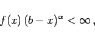
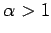
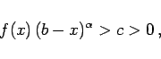

Inhalt Index DeskTop Bronstein

 Integralrechnung Bestimmte Integrale Uneigentliche Integrale, Stieltjes- und Lebesgue-Integrale Integrale mit unbeschränktem Integranden
Integralrechnung Bestimmte Integrale Uneigentliche Integrale, Stieltjes- und Lebesgue-Integrale Integrale mit unbeschränktem Integranden


|  | (8.89a) |
dann konvergiert das Integral (8.87a). Wenn jedoch f(x) im Intervall [a,b) positiv ist und eine Zahl  derart existiert, daß für hinreichend nahe bei b gelegene x-Werte gilt
|  | (8.89b) |
dann divergiert das Integral (8.87a).